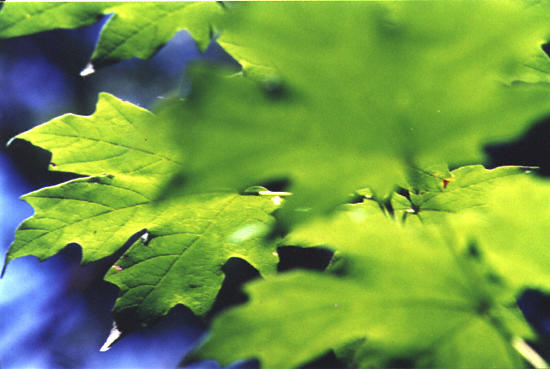
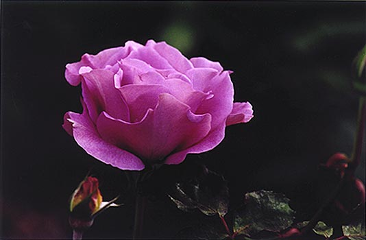
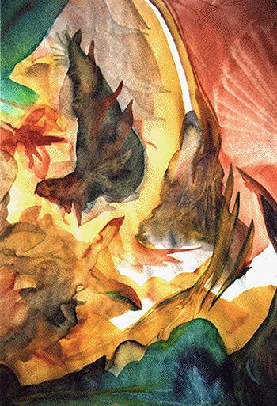
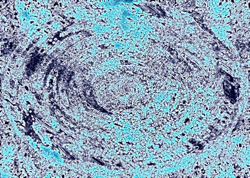
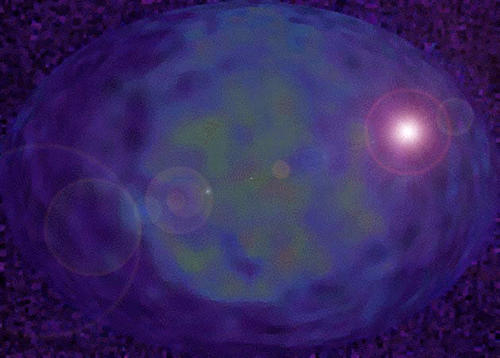
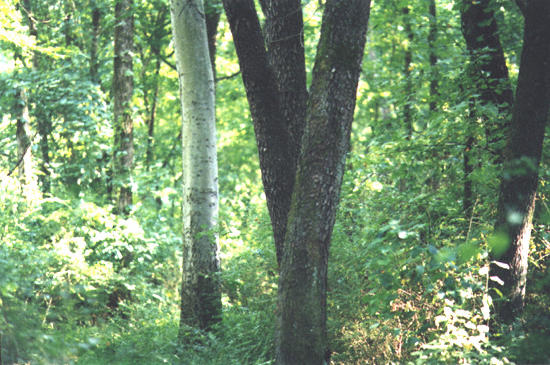

Oaklands 19, photograph
field and pond
fresh egg embryo sun
a pale yellow morning chases
squirrels chasing each other
around the scratchy pines
tiny drops clear heavens bloom
showing dome spectrums
every wildflower small and pink
blue bachelor's buttons cool stars
yellow and tall plumes waving
golden tips wild grasses fill a field
horseflies not yet risen above them
tick ticking birds ring the field from their trees
and the mourning dove infrequent and shy
the spider leaving, weaving silver fine threads
the path through to the pond
walking through webs in the woods
green stained glass leaves
the living pond our savior reservoir
the warm wooden dock we all sat on
talked late into the night
swam to cut the heat that summer, floating
fish nibbling our legs and toes in thick water
circles concentric
rippling the pond surface
water bugs skating light
crickets sustaining time
Summer, ©1987

San Diego Rose 1, Photograph
Garden Ecstatica
I.
the summer after the tornado
sudden winds
cubes and spirals
sudden rainbows
twice i went in and
the news was caution
the sky was a sea of changes
i’d never seen
one cloud was made of currents
grays and speed
a Japanese
box kite
transforming itself
another a fine soft quilted blanket
an air vent cut
an arc into the sky
and
two smaller
clouds
one spiralling
one being stretched down
by the funnel current
falling opalescent to the Earth
II.
a hummingbird came to the
sunflower arch and a tiny jewel there
yet he reigned
brightly his eyes surveyed
i was still by the cariopteris
silver leaves and delicate blue flowers
listening to the bees up close
suddenly the hummingbird's lightest buzz
inches in front of me emerald green
for an instant he hovered
squeaking sharply
startling us both
then he flew
to sit again
on the sunflower arch
i couldn't turn
remembering his emeralds
so close
then to fly away
III.
a flock of five rare birds
came twice in a morning
to the garden
lemon yellow with
bold black markings
they ate the seeds
out of the echinacea
i watched them safely
from the kitchen door
transfixed as if in a dream
warmed to know that i had
given them some respite there
in their travels
in exchange for what they had given me!
IV.
black butterflies in noon’s bright sun
swallowtails drinking coneflower centers
purple stars with orange eyes facing up
each memory a photograph held
still against nightmare fragments
sleepless that summer
and again every morning
the bumblebees disappearing
into foxglove throats
into deep blue umbels and
pollen bells
following invisible bumblebee paths
leaves making sound textures of
silk meeting silk leaf
soft meeting soft breeze
©1999

Etowah River, Georgia, photograph
Creek Meeting
his face has a dozen
small scars
and his eyes are flitting
at ten or so
and one round, purple deep bruise
on his left cheek
big yellow bike bigger than him
at the creek
fell on the hearth, he says
not a round one, i think
i know this guy killed
turtles down here
the turtle was bitin' everybody
not all turtles bite, i say
they found a baby down here, he says
and it wasn't nice
an animal baby or a person baby, i ask
a person baby ...
i've been to the North Pole
you should write down your
stories, i say, as he follows us
through the woods by the creek
walking his bike
my ... step-Daddy says when
he gets out of jail he's going to...
my uncle says when he gets out of
jail he's going to ...
he didn't do it but the police say he
did ...
when he gets out, when he gets out ...
we agree that people shouldn't
leave their trash here
we should come back
with a big plastic bag
to pick up trash, i say
he nods, yeah, like those big ones
they bring when people die,
my grandmother died, he says quickly
and she had
we find a basketball and
reflecting green and silver
sun shade
for when he gets a car
made it all the way up the bank
with that bike and all that
new stuff
we shook hands and
hope to see him soon
© 1/14/01

‘63 Rising, watercolor
Play Dead
roll over, wheeler
dealer time,
flick a brick into a spot of crime,
singe the sparkles in her eyes,
sparks from her flying surgeon wild mind,
... cut, while sleeping, winking, fatally,
seventeen and thirty-two dozen,
million-ten silences, scalpels
frozen axle spokes, ruby-studded axes slice
into a single greeting card rainbow,
the gleeful gnome frolicking underneath,
glittering simple man, embracing the
fetid charm of hot pink, and fully-lined,
straight jackets blowing across a glowing emerald lawn,
glinting gumdrop eyelids flower on the sugar-coated screen,
throw them magic money for tasting Mr. Clean,
selling six slick sex scandals with the twist of some hip,
or the slant of her mouth on a zesty chicken wing
freed from the flaming obelisk yet draped in stinking tar
the golden flea he leadeth thee, he bleeding in the sunshine
at twenty-three for free, roll over, quite dead the nimble
mind,
Do you mind?
©1989

shock, digital art
cool
it was yesterday
in an ice cube
when I saw them in the ice.
when I looked up from the ice water
everyone was singing the same
empty song, as if they didn't
know what time it was.
I couldn't tell if I was alone.
I disappeared, looking at their hands
as they walked
carefully along the beach.
they took my hand
and I felt my breath
catch in the cold.
they took me to John Muir's ghost
sitting on a tree stump
and his eyes were full of fields,
tears, and lost valleys,
rushing water.
he took us to California
(we had a great time.)
I looked out again from the ice cube.
just to make sure.
and I shivered
as they looked
at the empty bar stool blankly,
but no one really seemed
to notice.
they forgot the
rule of flight, in madness:
the truth
could not be priced
beauty
could not be bartered
for the reality of flowers
or how fun sex was
before the ocean was polluted
and everything wild
died
and all the money was worth
less than the trees it was
made of
he took one last look at the ocean.
his hand closed over hers.
their hair was long
like a luxury, like fields.
it blew in the wind and
they watched the waves
and
moonlight
was all that was left,
glittering on the surf.
keeping warm by staying close,
the concrete and glass was
cool on their backs.
sharing the rest of the air,
the water.
looking up for a planet
to jump to
among all those bright stars
they could no longer see
after the telescopes exploded.
words
one
at a time
yes
no
sometimes maybe they spoke
each other's names,
mostly
they held hands.
the winds blew them away.
everyone seemed so blind,
so very
cool.
one last look at the ocean
©1989

Firefly, watercolor
Inheritance
crescent moon claw
brooch in thinning black velvet sky
grandmother's pearl sits glowing
soft inside a drawer
back home
streetbulb eclipses all but a highway
winding wingless asphalt flat
cold and blunt-edged hand
without thinking fingers
without the clutch
of time-ache
at night on a road where lights are few
the radio off
windows down
silence in motion
the breath of speed
space, give it
back, cautious as a sage
paintbrush an essence free and loose of us
and back and forth the pulling
acceleration into the curve
watch you
do you don't take
curves of chance and change too
helter-skelter
break you into bits and
billions where you are not, came
grandmother's moon
grandfather's highway
streetlight string the fates
©1987

Midnight Eye, digital art
birdnote
breath-halted girl walks for the noise to repeat itself
its foreign self it is the sound
it is the sound, sound of a bird she does not know
by name but dream, releasing her hold
on memory-time not so distant
from her dream-hearing
like a yesterday-mouth
close and cringing, near
called or sang or spoke in foreign note to her it did
in a blue-spangled monastery-circus long-faced stranger dream
from the tip, from on top of his bleeding-crowned fallen head
it cried: music-triumph! (and piercing
truth with orange
open-flame beak)
and saw her, with one bead-ball-god-moon-eye
and one eye sapphire blue
sweet smiling at her
she to remember wonder?
which eye reflected her with face upturned
and which eye saw her?
spoke her name at once in silence? one drop of
blood-sound, called her?
and in the dream she follows
cannot answer
©1987

Oaklands 19, photograph
Sketching Barefoot
barefoot time again
my lover the wind
loving the elements ...
gracklethroat out
a cubbyhole
featherspike blue-black
bright-eyed sound
the river was gray as slate
mudfish hidden
now green as jade
is summer
now they nibble
at the surface
bubbling
oh Neil Young can paint a field
(that's not all he can paint)
these cows grazing safe
some curled some stand
the way you said
Equuus
the horse on the hill
lane shift, rail
part of that
field already
the trees don't move
they whisper, rooted
a shadow bruises the light
gold hawk stretched
still in the air
underside white and
buff
shadows softer than
the mourning dove
lulls
and gone
but the soft
it left
©6/5/01